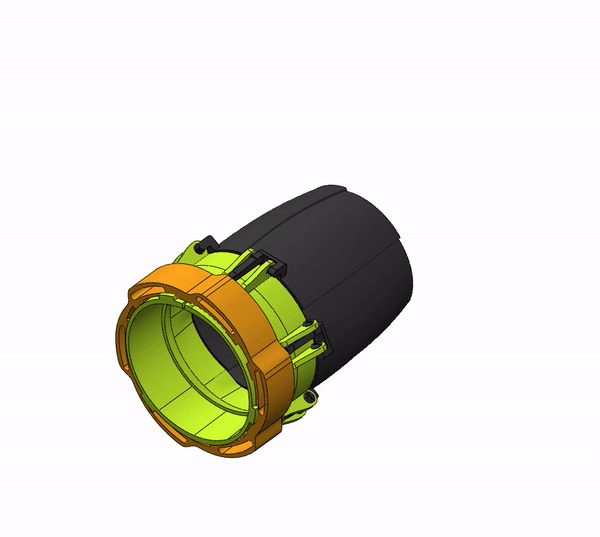
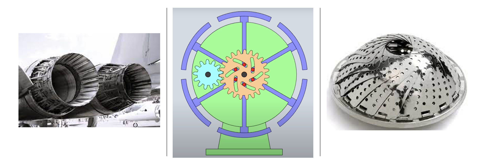

There currently is high demand for a continuously variable nozzle attachment for leaf blowers. The idea of a continuously variable nozzle is that the user can adjust the airspeed of the blower with minimal input, for various applications such as removing heavier debris like wet grass or leaves from a sidewalk.
The current solution to increasing the speed is using attachments called speed tips, which come in various shapes and sizes/diameters. Techtronic Industries (TTI) tasked the team with developing a simple solution to reduce part count in the purchase of a leaf blower. In addition, the output air had to have a minimum flow rate of 550 CFM.
Figure 1 shows an exploded view of the newly invented variable diameter nozzle at the Georgia Tech Summer 2021 Capstone Expo.
To vary the speed of the outlet fluid, the nozzle's outlet diameter had to be changed. However, a significant change in diameter could cause turbulence. In particular, air, with its relatively small bulk modulus, could make turbulence more likely to occur. Therefore, an organically shaped, aerodynamical design of the variable nozzle was necessary. Its aerodynamical performance could be numerically evaluated by estimating CFM flowrate.
Table 1 shows the 8 constraints provided by TTI. In addition to maximum speed and CFM flow rate, there were constraints related to manufacturing efficiency, safety, marketability, and durability.
There were three motivating mechanisms and designs used for reference. The jet engine's shape and its varying diameter method were considered aerodynamically efficient (figure 2 left). However, the engine's model involved too many parts and was too complicated to be mass-produced. Therefore, to decrease part count while keeping similar operation effects, gear cam mechanism was used (figure 2 middle). The gear cam mechanism decreased the part count and enabled the diameter of the nozzle to be altered with simple manipulation. To seal the gaps in between each petal, the mechanism of a vegetable cooker was referenced. When petals are fully opened or closed, each petal overlaps with the next to minimize air leakage (figure 2 right).
Figure 3 shows the mechanism of the variable diameter nozzle. 6 levers, each attached to a petal (black), were connected to the bottom adjusting collar (orange), and each petal had one degree of freedom toward the rotating direction. This design provided an advantage of being able to manipulate all 6 petals at once. And by using 6 detents, the radius of the nozzle could be reduced semi-continously for 6 steps.
Figure 4 shows the result of the CFD analysis. CFD analysis was conducted by using Siemens NX's flow analysis. For assumptions, deformation of the variable nozzle was ignored, the air was assumed to have constant properties, the air temperature was assumed to be constant, and the surface was assumed to be smooth. As a result, the maximum outlet air satisfied the maximum constraint at 170.61 mph (fully closed), but the CFM flow rate was 399.61 to 521.42 CFM, which did not fully satisfy the constraint (Table 1). The results of the CFD analysis were compared with the actual values based on the scale test standards provided by TTI (percent difference of less than 10%).
High-velocity air (125 mph inlet and 170.61 mph outlet) caused a certain amount of pressure to the petals. The pressure was estimated from CFD analysis, and it was used as a loading condition to determine the factor of safety for the levers on the petals where maximum stress was applied. Furthermore, as pressure changes caused dynamic loading, fatigue analysis was conducted to judge the product's durability (5000 cycles durability constraint - Table 1).
The video link in figure 5 gives more details that include FEA results, design ideas, manufacturing process, numerical test values, noise test results, description of each part, etc. The team placed 3rd at the GT Summer 2021 Capstone Expo.